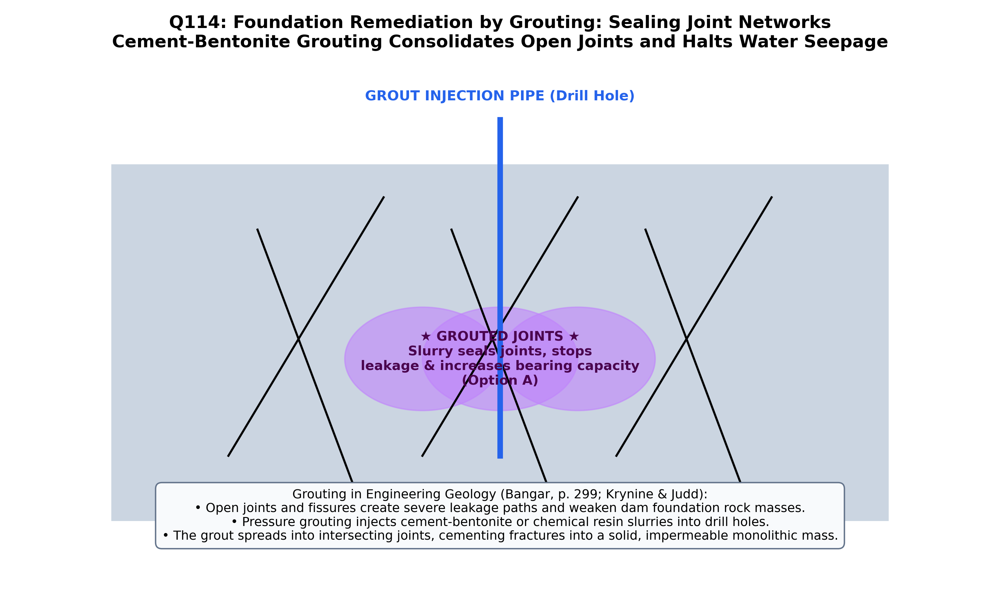

1. Theoretical Foundation: Mechanics of Rock Mass Grouting
In geotechnical and dam foundation engineering, grouting is the process of injecting fluid cementitious, clay-bentonite, asphaltic, or chemical slurries under controlled hydraulic pressure via drilled boreholes into subsurface rock discontinuities. Among the primary geological structures, joints (open, interconnected tensile or shear fractures without displacement) are the principal structural defects routinely and completely rectified by grouting:
| Geological Structure |
Physical Nature of Discontinuity |
Amenability to Grouting Rectification |
Primary Engineering Remedy |
| JOINTS (Open Fractures) (Option A) |
Discrete, interconnected planar apertures (0.1 mm to several cm) without shear offset |
IDEAL / DIRECTLY RECTIFIED: Grout penetrates open joint networks, sealing seepage paths and monolithically bonding blocks |
Consolidation (Blanket) Grouting & Curtain Grouting (IS: 6066) |
| Folds (Anticlines / Synclines) (Option B) |
Regional or local ductile-brittle curvature of rock strata |
Cannot "rectify" curvature of folded strata by grouting; only associated axial-plane tension joints can be grouted |
Re-align tunnel or dam axis relative to fold limbs and synclinal troughs |
| Faults & Shear Zones (Option C) |
Tectonic displacement planes filled with impermeable clay gouge, mylonite, or breccia |
Clay gouge blocks grout penetration; active faults cannot be stopped by cement injection |
Dental treatment (excavation of fault zone and backfilling with concrete plug) or seismic design |
| Inclined Strata (Option D) |
Regional homoclinal dip of sedimentary beds |
Attitude (strike and dip) of strata is a geometric property that cannot be altered by grouting |
Rock bolting, cable anchoring, or orienting dam axis parallel to strike |
"
Joints are the most universal structural defects encountered in bedrock at dam, reservoir, and tunnel sites. Because open joints drastically reduce the bearing capacity of the rock mass and act as high-velocity conduits for water leakage and uplift pressure, they are systematically
rectified by pressure grouting. By pumping cement-water slurry into boreholes intersecting the joint network, the voids are sealed and the jointed rock is transformed into an impervious, monolithic mass."
— K.M. Bangar, Principles of Engineering Geology (Standard Publishers, Chapter 15: Dams and Reservoirs, p. 312)
2. Consolidation vs. Curtain Grouting in Jointed Foundations
- Consolidation (Blanket) Grouting: Executed via shallow holes ($5\text{ to }15\text{ m}$ deep) drilled in a grid pattern across the entire footprint of a dam foundation at low pressures ($1.5\text{ to }3.5\text{ kg/cm}^2$). It seals near-surface relaxation and unloading joints, increases the Young's modulus of deformation ($E_m$), and prevents differential settlement.
- Curtain (Cutoff) Grouting: Executed via a single or double line of deep boreholes ($30\text{ to }100+\text{ m}$ deep) near the upstream heel of a dam at high pressures ($5\text{ to }20+\text{ kg/cm}^2$). It creates a deep, continuous impermeable barrier across deep-seated joint systems, cutting off under-seepage and dissipating dangerous hydraulic uplift pressure ($U$) beneath the dam base.
- Contact & Backfill Grouting in Tunnels: Seals open radial joints in the blast-damaged excavation disturbed zone (EDZ) and fills overbreak cavities behind the concrete tunnel lining.

Figure 114.1: Engineering geological cross-section of a concrete gravity dam resting on jointed bedrock, illustrating shallow grid Consolidation Grouting (strengthening jointed rock mass) and deep upstream Curtain Grouting (cutting off seepage and reducing hydraulic uplift pressure).
Official OPSC 2019 Question & Forensic Option Analysis
Q114. Which type of geological structure can be rectified by grouting ?
(A) Joints
(B) Folds
(C) Faults
(D) Inclined strata
✔ Verified Correct Answer: Option (A) — Joints
Forensic Verification: Joints are divisional planes or fractures in rocks along which there has been no appreciable shear displacement parallel to the fracture surface. Because joints create open apertures that weaken the rock mass and allow water leakage, they are directly and completely rectified by pressure grouting. Injecting cement or chemical grout fills the joint voids, binds individual rock blocks into a rigid monolithic mass, restores compressive strength, and makes the bedrock watertight.
Why this is wrong: Folds are macroscopic bends or undulations in layered rocks resulting from compressional tectonic stresses. Grouting cannot unbend or rectify the synclinal or anticlinal geometry of folded strata (though tension joints along a fold crest may be grouted locally).
Why this is wrong: Faults are major fracture zones along which relative displacement has occurred, usually containing impermeable clay fault gouge, crushed breccia, or mylonite, and carrying potential for future seismic slip. Fault zones are treated by dental treatment (excavating soft gouge and plugging with reinforced concrete) rather than simple grouting, and active fault displacement cannot be stopped by grouting.
Why this is wrong: Inclined strata represent tilted sedimentary beds dipping at an angle to the horizontal. Dip angle is a regional geometric attitude of the formation that cannot be altered or rectified by injecting grout.
Synthesis: Foundation Defect Treatment Methods in Engineering Geology
| Treatment Method |
Target Geological Defect |
Injection / Excavation Depth |
Primary Engineering Objective |
| Consolidation (Blanket) Grouting | Near-surface open joints & unloading fractures | $5\text{ to }15\text{ m}$ (Grid pattern) | Increase rock mass modulus ($E_m$) and bearing capacity |
| Curtain (Cutoff) Grouting | Deep interconnected joint networks | $30\text{ to }100+\text{ m}$ (Upstream line) | Arrest under-seepage and reduce uplift pressure ($U$) |
| Dental Treatment (Concrete Plug) | Fault zones & clay-filled shear seams | $1.5\text{ to }3\times$ width of fault seam | Excavate weak clay gouge and transfer load across fault |
| Rock Bolting & Cable Anchoring | Daylighting bedding planes & wedge blocks | $3\text{ to }25\text{ m}$ tensioned steel | Increase normal stress ($\sigma_n$) and shear resistance along planes |
| Drainage Galleries & Relief Wells | Downstream seepage pressure behind grout curtain | Drilled from dam foundation gallery | Relieve residual pore water pressure downstream of curtain |
High-Yield Practice Problems (8 Exam-Standard Questions)
1. What is the difference between a Joint and a Fault?
Answer: A joint is a fracture with zero (or negligible) shear displacement parallel to the plane; a fault is a fracture showing measurable shear displacement.
Both are brittle fractures, but displacement across the fracture plane distinguishes a fault from a joint.
2. How is the Lugeon unit defined in dam foundation investigations?
Answer: Water loss of 1 litre per minute per metre length of test borehole under a constant injection pressure of 10 bars (1 MPa or ~10 kg/cm²).
Introduced by Maurice Lugeon (1933), the Lugeonpacker test determines whether rock joints require grouting (typically required when LU > 3).
3. Where is a grout curtain located beneath a concrete gravity dam, and why?
Answer: Near the upstream heel of the dam, just upstream of the foundation drainage curtain.
Placing the grout curtain at the upstream heel blocks reservoir water entry immediately, minimizing hydraulic head and uplift pressure across the entire dam base.
4. What is the "split-spacing" method of drilling and grouting?
Answer: Drilling and grouting primary holes at wide spacing (e.g., 12 m), then halving the interval with secondary (6 m), tertiary (3 m), and quaternary (1.5 m) holes until grout intake drops to zero.
Split-spacing systematically closes first the widest master joints and progressively seals tighter fractures while verifying closure.
5. Why must grouting pressure be carefully limited during shallow consolidation grouting?
Answer: Excessive grouting pressure exceeding the overburden stress causes hydraulic jacking (uplift and heaving of horizontal bedding planes).
Rule of thumb: safe grouting pressure in bars is roughly $0.23\text{ to }0.33\text{ bar per metre}$ of overburden depth in stratified rock.
6. What is "Dental Treatment" (Shasta Formula) in dam foundation engineering?
Answer: Excavating weak fault gouge or weathered shear zones to a calculated depth ($d$) and backfilling with monolithic concrete.
By the USBR Shasta formula, for a fault seam of width $b$ (in metres) under a dam of height $H$: $d = 0.00656 \cdot b \cdot H + 1.5\text{ m}$ (for $H \ge 45\text{ m}$).
7. Which type of grout is used to seal wide solution cavities carrying fast-flowing water in karstic limestone?
Answer: Hot asphalt (bitumen) grout or sanded thick cement-bentonite-accelerating mortar.
Thin cement slurry is washed away by turbulent flowing water; hot asphalt solidifies rapidly on contact with cold water to plug large karst channels.
8. How is Rock Quality Designation (RQD) affected by closely spaced joints?
Answer: Closely spaced joints ($< 10\text{ cm}$ spacing) reduce RQD drastically because only intact core pieces $\ge 10\text{ cm}$ long are summed.
$\text{RQD} = \frac{\sum \text{Length of core pieces } \ge 10\text{ cm}}{\text{Total core run length}} \times 100\%$. Consolidation grouting seals these joints in situ.